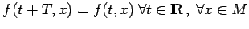
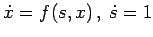
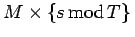
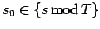
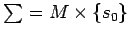
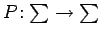
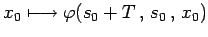
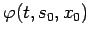

Inhalt Index DeskTop Bronstein

 Dynamische Systeme und Chaos Gewöhnliche Differentialgleichungen und Abbildungen Qualitative Theorie gewöhnlicher Differentialgleichungen Poincaré-Abbildung
Dynamische Systeme und Chaos Gewöhnliche Differentialgleichungen und Abbildungen Qualitative Theorie gewöhnlicher Differentialgleichungen Poincaré-Abbildung


Eine nichtautonome Differentialgleichung (17.11), deren rechte Seite f bezüglich t die Periode T besitzt, d.h., für die  gilt, wird interpretiert als autonome Differentialgleichung  mit zylindrischem Phasenraum . Sei  beliebig. Dann ist  eine transversale Ebene (s. Abbildung).
Die POINCARé-Abbildung ist global als  über  gegeben, wobei  die Lösung von (17.11) mit Anfang x0 zur Zeit s0 ist.